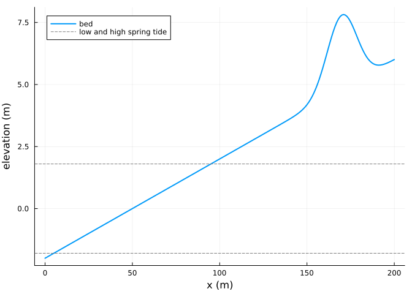
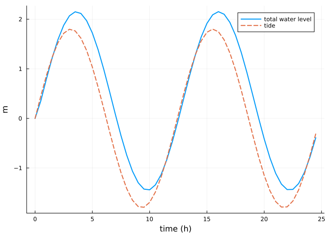
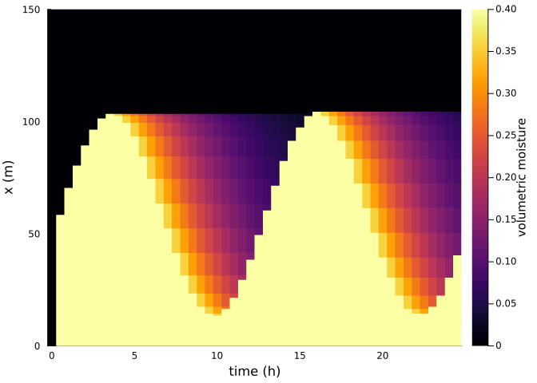
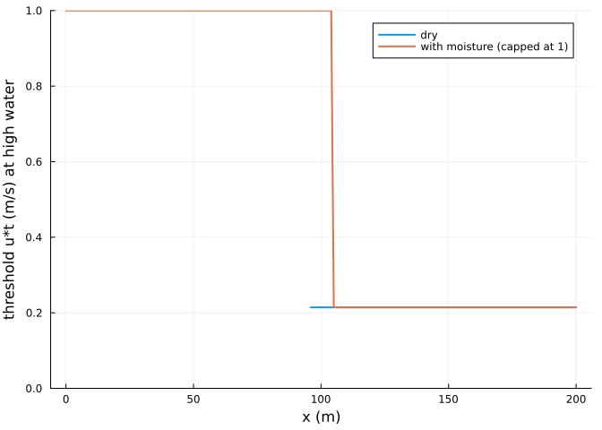
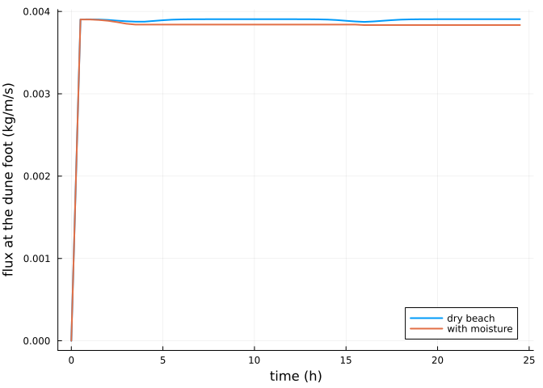
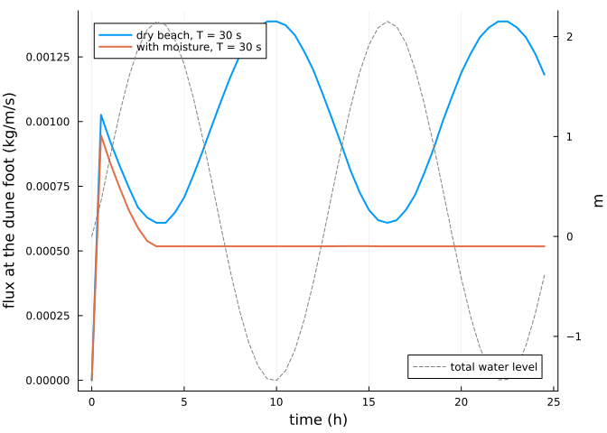

Tides, waves and moisture
Simon Frost
Overview
On a beach the supply of dry sand is controlled by the water. The tide and the runup of waves (Stockdon et al. 2006) wet the beach, wet sand needs a higher shear velocity to move, and the surface dries again with a time scale Tdry. This vignette sets up a beach and a dune under an onshore wind and follows the transport into the dune with and without moisture.
ENV["GKSwstype"] = "100"
using Aeolis
using PlotsThe beach
x = collect(0.0:1.0:200.0)
zb = @. -2.0 + 0.04 * x + 3.0 * exp(-((x - 170) / 12)^2)
t = collect(0.0:1800.0:(2 * 86400.0))
tide = hcat(t, 1.8 .* sin.(2pi .* t ./ 44712.0))
waves = hcat(t, fill(1.0, length(t)), fill(8.0, length(t)))
wind = hcat(t, fill(11.0, length(t)), fill(270.0, length(t)))
plot(x, zb; lw=2, label="bed", xlabel="x (m)", ylabel="elevation (m)")
hline!([-1.8, 1.8]; ls=:dash, color=:gray, label="low and high spring tide")
base = (; xgrid_file=x, bed_file=zb, wind_file=wind, tide_file=tide, wave_file=waves,
process_tide=true, process_wave=true, process_runup=true, beach_slope=0.04,
grain_size=0.0003, dt=1800.0, tstop=86400.0, output_times=1800.0,
output_vars=[:zb, :zs, :TWL, :moist, :uth, :qs])
dry = solve(AeolisProblem(AeolisParameters(; base...)))
wet = solve(AeolisProblem(AeolisParameters(; base..., process_moist=true, th_moisture=true,
method_moist_process=:infiltration,
method_moist_threshold=:belly_johnson,
Tdry=3 * 3600.0)))AeolisSolution with 50 output times from 0.0 to 88200.0 s, retcode Success
saved: TWL, moist, qs, uth, zb, zsWater levels and moisture
The total water level is the tide plus the runup of the waves; below it the beach is saturated, and above it the surface moisture decays:
TWL = transect(wet, :TWL)[1, :]
plot(wet.t ./ 3600, TWL; lw=2, label="total water level", xlabel="time (h)", ylabel="m")
plot!(wet.t ./ 3600, tide[1:length(wet.t), 2]; lw=2, ls=:dash, label="tide")
moist = transect(wet, :moist)
heatmap(wet.t ./ 3600, x, moist; xlabel="time (h)", ylabel="x (m)",
colorbar_title="volumetric moisture", ylims=(0, 150))
Threshold and transport
With the Belly and Johnson formulation the threshold rises with the gravimetric moisture content and is infinite above 10 % volumetric moisture, so the wet part of the beach does not supply sand:
k = argmax(TWL)
plot(x, transect(dry, :uth)[:, 1, k]; lw=2, label="dry", ylims=(0, 1),
xlabel="x (m)", ylabel="threshold u*t (m/s) at high water")
plot!(x, min.(transect(wet, :uth)[:, 1, k], 1.0); lw=2, label="with moisture (capped at 1)")
The flux arriving at the dune foot, at x = 150 m, over the day:
i = 151
plot(dry.t ./ 3600, transect(dry, :qs)[i, 1, :]; lw=2, label="dry beach",
xlabel="time (h)", ylabel="flux at the dune foot (kg/m/s)")
plot!(wet.t ./ 3600, transect(wet, :qs)[i, 1, :]; lw=2, label="with moisture")
total(sol) = sum(transect(sol, :qs)[i, 1, 2:end]) * 1800.0
(dry=round(total(dry); digits=1), moist=round(total(wet); digits=1))(dry = 343.9, moist = 339.0)Moisture changes little here. With the AeoLiS default adaptation time T = 1 s and grains moving at the wind speed, the adaptation length is about 11 m, so even the narrow dry beach left at high water supplies the dune fully. The effect of moisture depends on the fetch: with a long adaptation time, which gives a long fetch, the wet beach matters.
slow = (; base..., T=30.0)
dry30 = solve(AeolisProblem(AeolisParameters(; slow...)))
wet30 = solve(AeolisProblem(AeolisParameters(; slow..., process_moist=true, th_moisture=true,
method_moist_process=:infiltration,
method_moist_threshold=:belly_johnson,
Tdry=3 * 3600.0)))
(dry=round(total(dry30); digits=1), moist=round(total(wet30); digits=1))(dry = 89.1, moist = 47.9)plot(dry30.t ./ 3600, transect(dry30, :qs)[i, 1, :]; lw=2, label="dry beach, T = 30 s",
xlabel="time (h)", ylabel="flux at the dune foot (kg/m/s)")
plot!(wet30.t ./ 3600, transect(wet30, :qs)[i, 1, :]; lw=2, label="with moisture, T = 30 s")
plot!(twinx(), wet30.t ./ 3600, transect(wet30, :TWL)[1, :]; lw=1, ls=:dash, color=:gray,
label="total water level", ylabel="m", legend=:bottomright)
References
Stockdon, Hilary F., Rob A. Holman, Peter A. Howd, and Asbury H. Sallenger. 2006. “Empirical Parameterization of Setup, Swash, and Runup.” Coastal Engineering 53: 573–88. https://doi.org/10.1016/j.coastaleng.2005.12.005.